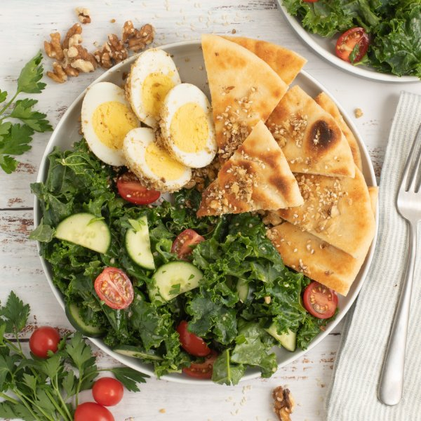

Kale Salad with Nutty Middle Eastern Spiced "Dukkah" Eggs & Flatbread

Total Time
35 min
Nutrition (Per Serving)
594.6 kcalCalories
22.6 gProtein
42.8 gCarbs
39.1 gFat
Full nutrition table
| Calories | 594.6 kcal |
| Total fat | 39.1 g |
| Saturated fat | 10 g |
| Trans fat | 0.3 g |
| Cholesterol | 346 mg |
| Sodium | 374.7 mg |
| Carbohydrates | 42.8 g |
| Fiber | 6 g |
| Sugars | 6 g |
| Protein | 22.6 g |
| Potassium | 838.1 mg |
| Calcium | 207.8 mg |
| Iron | 6.4 mg |
| Vitamin A | 1363.8 IU |
| Vitamin C | 85.8 mg |
| Vitamin D | 77 IU |
Cookware
Ingredients
- 8eggs
- 1English cucumber
- 2flatbreads or naan
- 4 clovesgarlic
- 1 pintgrape tomatoes
- 1 small bunchItalian (flat-leaf) parsley
- 1 bunchkale
- 1lemon
- ½ cupwalnuts
- black pepper
- coriander, ground
- cumin, ground
- extra virgin olive oil
- salt
- sesame seeds
Steps
- Mince walnuts.½ cup walnuts
- Preheat a medium saucepan over medium heat.
- While the pan heats up, peel and mince garlic.2 cloves garlic
- Once the pan is hot, add oil and swirl to coat the bottom. Add walnuts, garlic, sesame seeds, and spices to the pan. Cook, stirring constantly, until fragrant and toasted, 1-2 minutes. Transfer the "dukkah" spice mix to a small bowl to keep the garlic from overcooking. (Reserve pan for next step.)4 tsp extra virgin olive oil
2 tbsp sesame seeds
2 tsp coriander, ground
1 tsp cumin, ground
½ tsp salt
¼ tsp black pepper - Wipe the saucepan clean with paper towels. Place eggs in the pan, cover with water (from the tap), and bring to a boil; reduce heat to a simmer and cook for 8 minutes. Drain hot water and add ice or run under cold water to cool; set aside.8 eggs
- Meanwhile, wash and dry the fresh produce.1 lemon
1 bunch kale
1 English cucumber
1 pint grape tomatoes
1 small bunch Italian (flat-leaf) parsley - Peel and mince additional garlic; place in a medium bowl.2 cloves garlic
- Zest and juice lemon into the bowl with the garlic, then add oil, salt, and pepper; whisk to combine the dressing.4 tsp extra virgin olive oil
½ tsp salt
¼ tsp black pepper - Fold kale leaves in half lengthwise and slice off the stems. Chop or tear leaves into bite-sized pieces and add to the bowl with the dressing; using your hands, massage kale with the dressing until wilted, 1-2 minutes.
- Trim and halve cucumber lengthwise, then slice crosswise into thin half-moons; halve tomatoes. Add both to the bowl.
- Shave parsley leaves off the stems; discard stems and mince the leaves. Add to the bowl, toss to combine the salad, and set aside.
- Peel eggs, roll in the dukkah to coat, and halve lengthwise. (Reserve remaining dukkah for the flatbread.)
- Toast flatbread if desired; drizzle with oil, sprinkle with remaining dukkah, and cut into wedges.2 flatbreads or naan
2 tsp extra virgin olive oil - To serve, divide salad, eggs, and flatbread between plates or bowls. Enjoy!